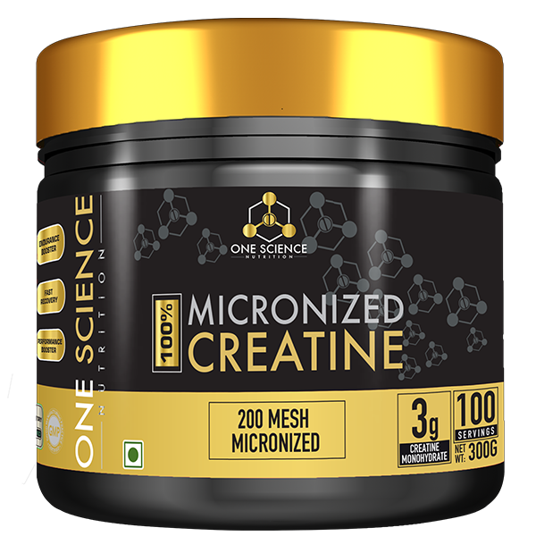

| home | About | contact | Products |
|---|


In addition to diet other words or phrases are used to identify and describe these foods including light, zero calorie, low calorie, low fat, no fat and sugar free. In some areas use of these terms may be regulated by law. For example, in the U.S. a product labeled as "low fat" must not contain more than 3 grams of fat per serving; and to be labeled "fat free" it must contain less than 0.5 grams of fat per serving
Process The process of making a diet version of a food usually requires finding an adequate low-food-energy substitute for some high-food-energy ingredient.[2] This can be as simple as replacing some or all of the food's sugar with a sugar substitute as is common with diet soft drinks such as Coca-Cola (for example Diet Coke). In some snacks, the food may be baked instead of fried thus reducing the food energy. In other cases, low-fat ingredients may be used as replacements In whole grain foods, the high fiber content effectively displaces some of the starch component of the flour. Since certain kinds of fibers have no food energy, this results in a moderate energy reduction. Another process relies on the intentional addition of other reduced-food-energy ingredients, such as resistant starch or dietary fiber, to replace part of the flour and achieve a more significant energy reduction.
Creatine (/ˈkriːətiːn/ or /ˈkriːətɪn/)[1] is an organic compound with the nominal formula (H2N)(HN)CN(CH3)CH2CO2H. It exists in various modifications (tautomers) in solution. Creatine is found in vertebrates where it facilitates recycling of adenosine triphosphate (ATP), primarily in muscle and brain tissue. Recycling is achieved by converting adenosine diphosphate (ADP) back to ATP via donation of phosphate groups. Creatine also acts as a buffer
 Metabolic role Creatine is a naturally occurring non-protein compound of which the primary metabolic role is to combine creatine with a phosphoryl group to generate phosphocreatine, which is used to regenerate ATP or adenosine triphosphate. Most of the human body's total creatine and phosphocreatine stores are found in skeletal muscle (95%), while the remainder is distributed in the blood, brain, testes, and other tissues.[16][17] The average amount of total creatine (creatine and phosphocreatine) stored in the body is approximately 120 mmol/kg of dry muscle mass.[18] However, the upper limit of creatine storage post supplementation and dietary intervention is believed to be around 160 mmol/kg.[18] Studies have also shown that 1–2% of intramuscular creatine is degraded per day and an individual would need to consume about 1–3 grams of creatine per day to maintain average (unsupplemented) creatine storage.[18][19][20] For most individuals about half (1 g/day) of this daily need is consumed from an omnivorous diet,[21][17] while the remaining amount is synthesized in the liver and kidne